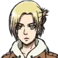
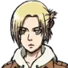

EREN JEAGER
Estado: fallecido
Edad: 20
Eren jeager empieza latemporada infiltrado en Marley, tras confrontar a Reiner se revela y comienza un ataque a la ciudad enemiga. Aqui se nos muestra como el odio hacia los titanes y el deseo de libertad que se cumpliría al eliminarlos fue transferido a la gente de afuera de la isla, ellos son los nuevos enemigos. Se nos cuenta que el verdadero poder de su titán es ver el futuro y el pasado desde el punto de vista de los portadores del mismo. A lo largo de la temporada Eren se vuelve cada vez más agresivo y se va alejando de sus amigos, incluso llegando a atacar a Armin y Mikasa. Comienza un movimiento seguido por muchos de los soldados, quienes lo idolatran como el salvador. Luego de engañar a su medio hermano Zeke, Eren obtiene los poderes del titán fundador y da inicio a su plan de acabar con la humanidad exceptuando a la gente de la isla. Eren pasa de ser el protagonista a cumplir un papel de antagonista. Finalmente Eren muere a manos de Mikasa para revelarnos su amor por ella, así como la verdad detras de su plan para salvar a sus amigos, incluso sabiendo los resultados.
MIKASA ACKERMAN
Estado: viva
Edad: 22
Mikasa Ackerman empieza la temporada mostrando su descontento con el plan de Eren de atacar Marley, pero sin embargo, una vez más, nos asegura que su prioridad es él y que por ello lo seguirá igualmente. A lo largo de la temporada Mikasa verá como Eren se aleja de ella y se va volviendo más real el plan de aniquilar a la raza humana, esto la llevará a enfrentar el dilema de que hará en caso de ser necesario matar a Eren. Al final de la serie, luego de que Eren asesine a la mayor parte de la población, Mikasa mata a Eren para salvar al mundo. Se muestra el amor que Mikasa sentía por Eren.
ARMIN ARLERT
Estado: vivo
Edad: 20
Armin Arlert al inicio de la temporada siue el plan de Eren utilizando su poder de titán colosal para el ataque a Marley, sin embargo a lo largo de la temporada se ve como Armin está cada vez más en contra de las ideas de su amigo por lo que terminará formando parte del grupo que tratará de detenerlo. A su vez de reencuentra con Annie con quien manteine una buena relación para al final estar juntos. Luego de la muerte de Hange, hereda el puesto de comandante de la legión.
LEVI ACKERMAN
Estado: vivo
Edad: +30
Levi Ackerman se presenta en el ataque a Marley, capturando a Zeke, quien en realidad traiciona a Marley por un plan con su medio hemano, sin embargo es puesto bajo vigilancia del soldado más fuerte de la humanidad y de sus tropas. Tras un intento de escape Zeke logra herir a Levi con una explosión, donde pierde un ojo y sufre daños en todo el cuerpo. Aún así logra enfrentarse a Eren en elcombate final donde pierde la capacidad de caminar.
HANGE ZOE
Estado: fallecida
Edad: Desconocida
Hange Zoe durante la temporada lidia con el mando de sus tropas frente a la revolución comandada por Eren. Asume un papel de lider del grupo que tratará de salvar a la humanidad a pesar de que se muestra agotada por el puesto que heredó de Erwin. Es quien encuentra, salva y trata las heridas de Levi, evitando su muerte. Finalmente Hange, buscando conseguir tiempo para su equipo, se sacrifica.
Jean kirstein
Estado: vivo
Edad: 20
Jean kirstein siendo uno de los mejores soldados,
SASHA BLOUSE
Estado: viva
Edad: 21
Sasha Blouse no tiene mucha aparición en esta temporada pues es asesinada por Gabi, sin embargo se nos muestra como su muerte es uno de los primeros puntos que aleja a Eren del resto de reclutas, además de mostrarnos como había formado una relación de amistad, casi de pareja, con un ciudadano de Marley.
CONNIE SPRINGER
Estado: vivo
Edad: 20
Connie Springer
REINER BRAUN
Estado: vivo
Edad: 17
Reiner Braun hace su primera aparición en esta temporada, se nos presenta como un joven con gran habilidad, quedando como el segundo mejor recluta solo por detras de Mikasa. Posee una gran fuerza física y es de constitución solida. Es más habil que muchos de los veteranos.
ANNIE LEONHART
Estado: viva
Edad: 16
Annie Leonhart hace su primera aparición en esta temporada, se nos presenta como una joven experta en el combate cuerpo a cuerpo, destacando por sobre la mayoría de otros reclutas, decidió formar parte de la policía militar. Se nos muestra con una personalidad apática, solitaria y de pocos amigos. Para el final de la temporada se nos revela que ella es la titan hembra, quien había atacado y asesinado a varios miembros de la legión, e intentó capturar a Eren. Tras un enfrentamiento, Annie queda atrapada en un capullo endurecido.
MARCO BOTT
Estado: fallecido
Edad: 16
Marco Bott hace su primera aparición en esta temporada, se nos presenta como un personaje simpatico y agradable, así como un soldado con gran habilidad. Tras quedar entre los 10 mejores de su tropa decide unirse a la policia militar, sin embargo, antes de poder hacerlo un ataque inesperado de los titanes lo obliga a defender la ciudad de Trost donde pierde la vida. Su muerte causa un impacto muy importante en su amigo y camarada Jean.
KRISTA LENZ
Estado: viva
Edad: 15
Krista Lenz hace su primera aparición en esta temporada, se nos presenta como una joven generosa y de buen corazón, dispuesta a ayudar a los demás. Como recluta logró destacar gracias a la ayuda de Ymir, con quien guarda una relación de amistad muy cercana. Es una de los soldados de menor estatura.
YMIR
Estado: viva
Edad: 16
Ymir hace su primera aparición en esta temporada, se nos presenta como una joven directa y abrasiva, antipatica, arrogante e insensible pero con una gran habilidad como recluta.